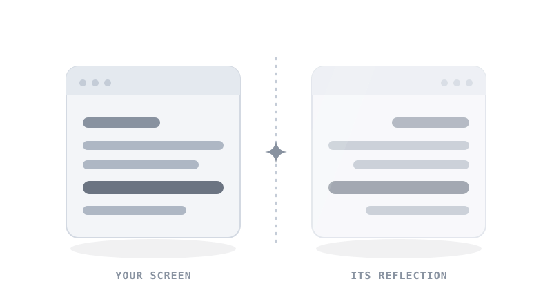
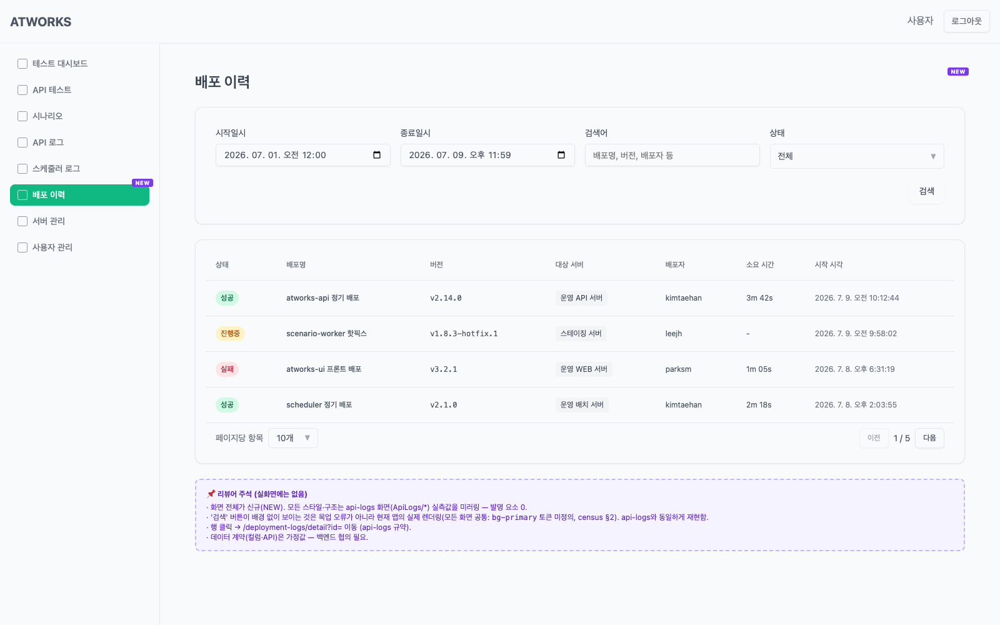
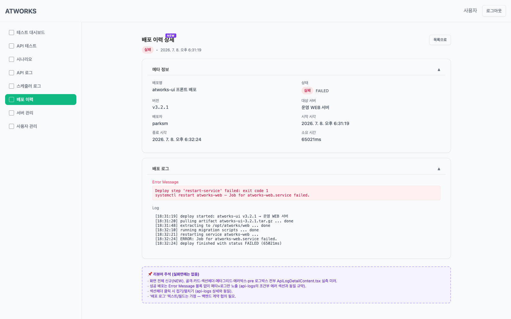
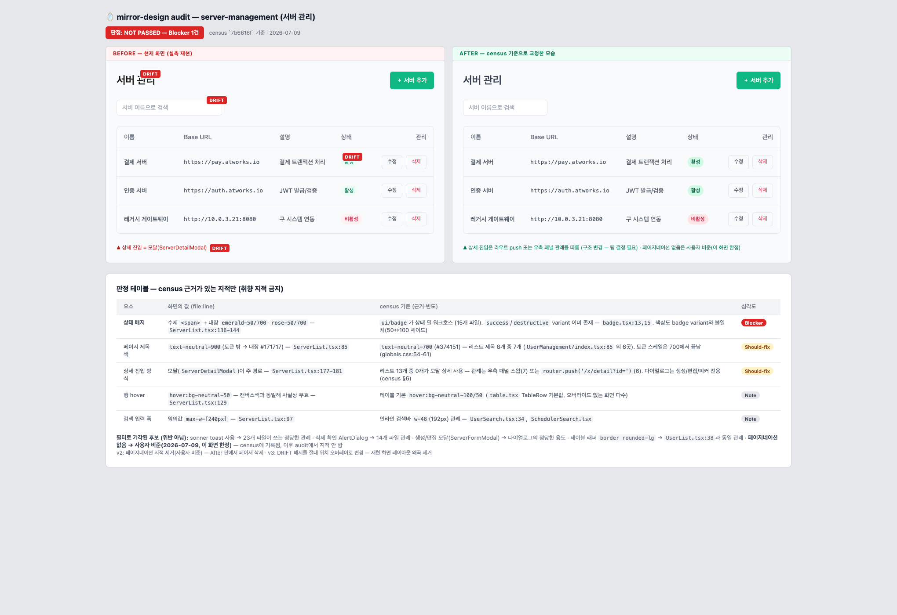

mirror·designGiven only “배포 이력 (deployment logs) — list + detail,” mirror-design surveyed the existing codebase and assembled both screens out of patterns it already found. Every color, size, and control traces to a real file:line. Nothing was designed — it was cited.

| Element | Reused pattern | Source |
|---|---|---|
| Page skeleton | container · h1 text-2xl semibold neutral-700 | ApiLogs/index.tsx:65-66 |
| Search card | rounded-xl border, shadow-sm, p-4 | card.tsx:12 |
| Filter grid | form space-y-4 · grid lg:grid-cols-4 | ApiLogSearch.tsx:26-27 |
| Date / text inputs | h-9 rounded-md border input | input.tsx:14 |
| Status select | h-10 select + ChevronDown | select.tsx:22 |
| Search / reset | default h-10 · outline sm h-8 | button.tsx:8,14 |
| Table & header | w-full text-sm · th text-xs override | table.tsx:12 · ApiLogList.tsx:48-52 |
| Status badge | rounded-full · success / danger / warning | badge.tsx:6 |
| Server pill | px-2 py-1 rounded bg-neutral-100 | ApiLogList.tsx:95 |
| Footer pager | size select · prev / n·m / next | ApiLogList.tsx:141-180 |

| Element | Reused pattern | Source |
|---|---|---|
| Skeleton + back | page wrap · “목록으로” button | ApiLogDetailContent.tsx:167-173 |
| Meta card + grid | card · labelled meta grid | ApiLogDetailContent.tsx:178-237 |
| Collapsible section header | click to fold / unfold | ApiLogDetailContent.tsx:186,188 |
| Error message box | rose error block | ApiLogDetailContent.tsx:264-271 |
| Deploy-log pre box | monospace pre log | ApiLogDetailContent.tsx:285-293 |
| Status badge | shared badge, same variants | badge.tsx:6 |
Point the same evidence backwards and you get /mirror-design:audit — it judges an existing screen against the census. No taste, only citations. Here is server-management, graded.

| Element | Drift found | Census standard | Sev. |
|---|---|---|---|
| Status badge | hand-rolled span, built-in emerald/rose | badge.tsx:13,15 · 15 files | Blocker |
| Title color | text-neutral-900 — off the token scale | 7 of 8 lists use neutral-700 | Should-fix |
| Detail entry | modal — 0 of 13 lists do this | panel swap / route push | Should-fix |
| Row hover | neutral-50 — invisible on canvas | table.tsx default | Note |
What it refused to flag: sonner toast ✓ 23 files · delete-confirm AlertDialog ✓ 14 files · no-pagination ✓ ratified by the reviewer for this screen — recorded in the census, never raised again.
Two hard gates run before a single pixel is drawn. They are the reason “0 invented” is a guarantee, not a slogan.
Every element in the mockup must carry a file:line in the mapping table. If a piece has no precedent in your codebase, mirror-design stops and asks — it never improvises one.
Elements with the same job on one screen must use the same control. No radio-button filter sitting next to two chip filters just because they came from different reference screens.